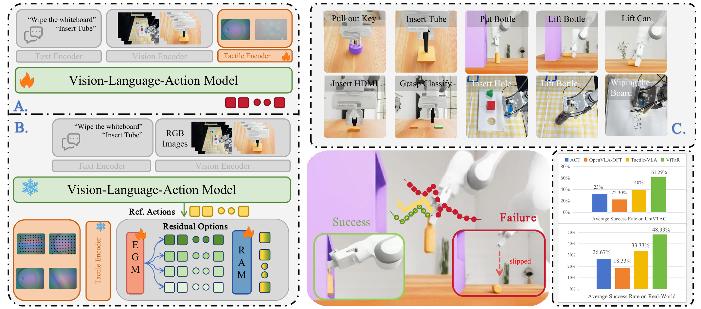
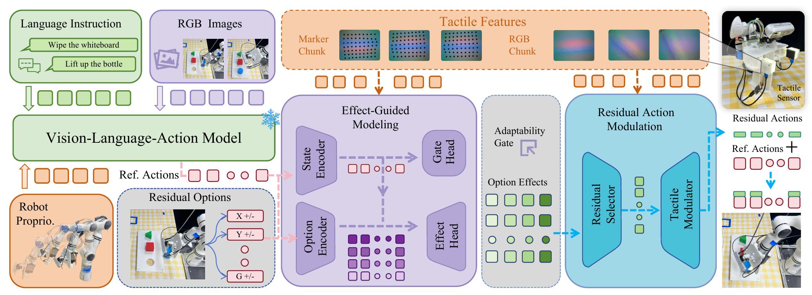
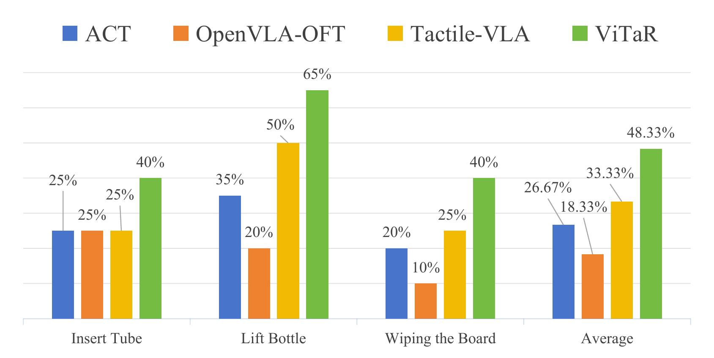

Frozen foundation VLA
Language, RGB, and proprioception produce a reference action while the pretrained policy remains intact.
Foundation model manipulation · tactile adaptation
Touch adapts execution without rewriting a frozen VLA policy.
Explore the project01 / Overview
ViTaR preserves a frozen VLA’s semantic action, then uses local tactile evidence for conservative execution calibration.
Project video


ViTaR preserves the semantic action proposed by a frozen VLA, and only injects a tactile-conditioned residual when local contact evidence calls for calibration.
How it works
A two-stage design determines whether a correction is locally justified, then selects and scales a structured residual before execution.

Language, RGB, and proprioception produce a reference action while the pretrained policy remains intact.
Outcome-grounded preference evidence identifies whether and which correction is locally useful.
Visuotactile observations select and continuously scale a bounded residual for execution.
02 / Results
Across contact-rich tasks, ViTaR lifts a frozen base policy through conservative, tactile-conditioned corrections.
UniVTAC average success
61.3%+30.6 percentage points over frozen OpenVLA-OFTPhysical-robot average success
48.3%+30.0 percentage points over frozen OpenVLA-OFTRetain pretrained semantic intent; let touch make only the local correction.
ViTaR is evaluated on precision insertion, stable grasping, and sustained sliding contact with a RealMan RM65-B robot and a tactile parallel gripper.
Open chart PDF ↗
03 / Real-world experiments
Three representative real-robot tasks demonstrate precision alignment, secure grasping, and sustained contact.
Fine contact adjustment for insertion.
Contact-aware grasp stabilization.
Adaptive force-sensitive motion during contact.